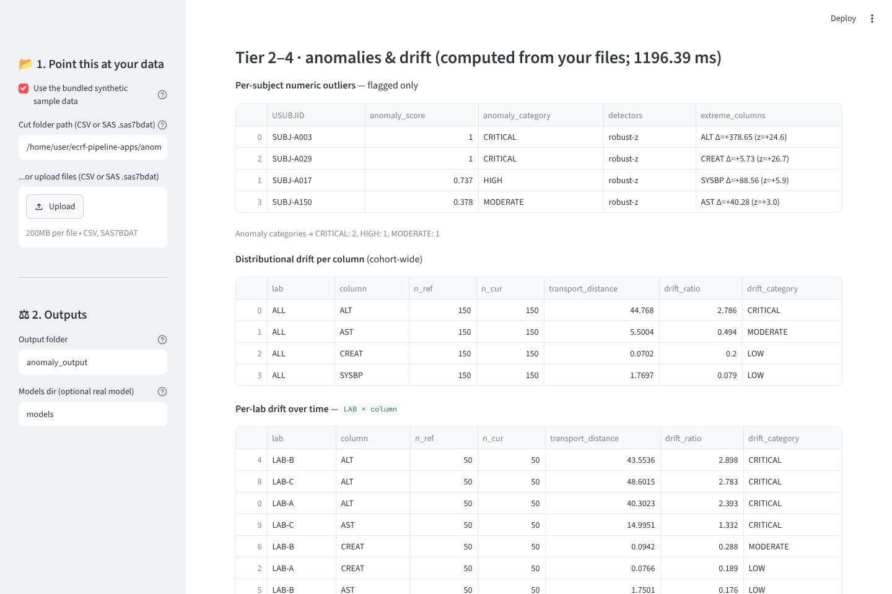

Starting Python in your browser; first visit downloads about 30 MB.
Loading the page code.

Privacy: Runs in your browser; files are processed on your device and not uploaded by the app; the page is downloaded from GitHub Pages and the CDN, which see your IP address; synthetic data only; not a validated or Part 11 system.
Limits: Here every detector runs its [SI] stand-in (robust z, 1-D Wasserstein drift, bag-of-words text isolation) with built-in thresholds; every flag needs human review.
Starting Python in your browser; first visit downloads about 30 MB.
Loading the page code.
